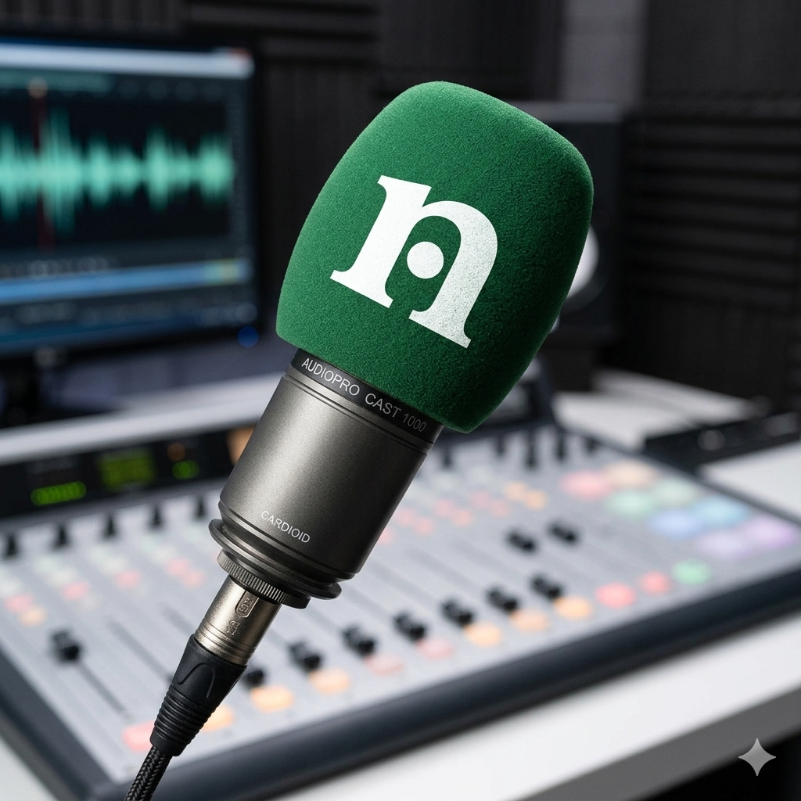

Navega y Sintoniza la corriente
Radio Neptuno es un espacio de difusión, cultura y música independiente.
Escuchar AhoraSobre Radio Neptuno
En el vasto mas de información, Radio Neptuno emerge como un proyecto jóven, autogestionado dedicado a traer lo mejor de la música de todas las épocas.
Somos la frecuencia donde tu voz también tiene espacio, conectamos relatos, el pulso de la ciudad con una propuesta auténtica.

Parrilla de Programación
Acompaña tu día con nuestro contenido seleccionado
Amanecer Neptuno
Música ambiental y sonidos relajantes para comenzar el día con energía positiva.
Marea Matinal
Actualidad, debate local y la mejor selección musical para comenzar la jornada.
Conexión Musical
Un recorrido por los clásicos del rock y pop internacional de todas las épocas.
Corriente Continua
El programa de actualidad local. Resumen de noticias del día e Información del tránsito.
Tarde de Vinilos
Los grandes álbumes de la historia reproducidos completos en su formato original.
La Fosa
Lanzamientos independientes, rock, synth-pop y los sonidos que no escuchas en el dial masivo.
Radio Teatro Vivo
Dramatizados, cuentos sonoros y la memoria histórica de nuestra comunidad.
Neptuno Nocturno
Sesión ambiental, lo-fi y paisajes sonoros para cerrar el día en sintonía.
Últimas Noticias
Productos de la Tienda
Sostén este proyecto independiente con nuestra Merch.